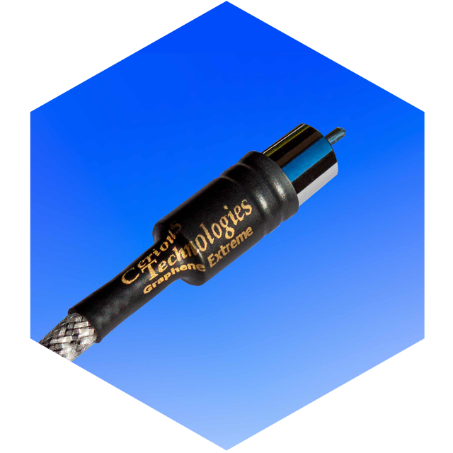
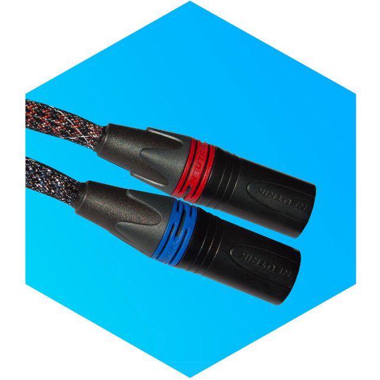
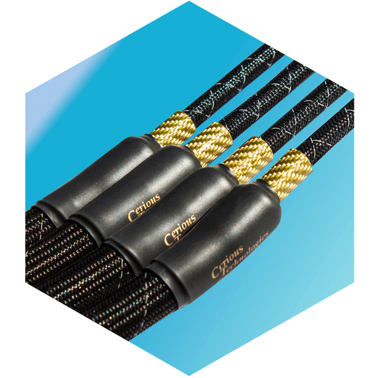

Tech We're Cerious About
Digital Interconnects
Digital cables are another animal, as they do not transfer analog signals, but rather digital signals. Along with all this is high frequency information that must exist with limited samples per second due to the format. If minor abnormalities exist in the low end then there are enough samples to “fill in” proper information with little loss in integrity. Not so in high frequencies.
The Graphene Extreme address this problem through a special type of carbon fiber at a fraction the diameter of a human hair – 48,000 strands to be exact. These fibers are linear up to 4.0 Gigahertz. Why does it matter that a cable chopped off at frequencies of 256 KHz (and often at much lower frequencies) goes out this far? Transparency.
Digital equipment today is very sophisticated. It can communicate with other pieces in the chain, coordinating the sending and receiving of these signals. Supplying an utterly transparent cable between the sending unit and the receiving unit allows them to function as harmoniously as possible. The goal of a cable is to most accurately form a connection between two pieces of equipment and allow them to function at their highest potential. This is achieved with the Graphene Extreme.
Shop Digital InterconnectsInterconnects
Graphene Extreme interconnects are small. The goal is to maximize the individual conductors and make them as compact as possible, minimizing noise and internal resonances. This also enabled Cerious Technologies to price the Graphene Extreme interconnects at a never before seen performance per dollar level.
The conductors in Graphene Extreme interconnect cables have more going for them than just Graphene. First of all they are 10 gauge in size. Why would you need such a large conductor for such a small signal? Radio Telescopes.
Radio Telescopes are huge. In fact, the smaller the signal they are trying to read, the larger they need to be. This relationship also holds true in audio cables. In audio cables the smaller the signal the more it is affected by any resistance or interference from the cable itself. While a 22 gauge conductor will not current limit a low level audio signal it has significant resistance to affect the extremely low level ambience and sound field cues that enable audio systems to sound more realistic. You can hear the difference.
Each conductor employs our Large Crystal Silver and Copper, 24,000 strands of carbon fiber and is filled with Graphene particles under high pressure. Graphene Extreme Interconnects are available either single ended terminate with Cardas RCAs, or in Balanced configuration terminated with industry standard Neutrik XLRs.
Shop InterconnectsSpeaker Cables
No other cable in the Graphene Extreme line is as “extreme” as the speaker cable. Each conductor is 0.5” in diameter and effectively 2/0 AWG. Comprised of a core of 8 gauge Large Crystal Silver and Copper, wrapped in 96,000 strands of Carbon Fiber, and flooded with Cerious Technologies proprietary Liquid Ceramic/Graphene Particle fluid, this bundle is then encased by copper shot which acts as both a conductor and a damping element within the jacket.
Each of the four individual tubes is reinforced with a wrap of Carbon Fiber to further damp vibrations and to ensure each Graphene Extreme cable performs like new for many years to come. Available terminated with either all spade lugs, all banana plugs, or a combination of spade lugs on one end and banana plugs on the other. Graphene Extreme speaker cables are not directional.
Shop Speaker Cables